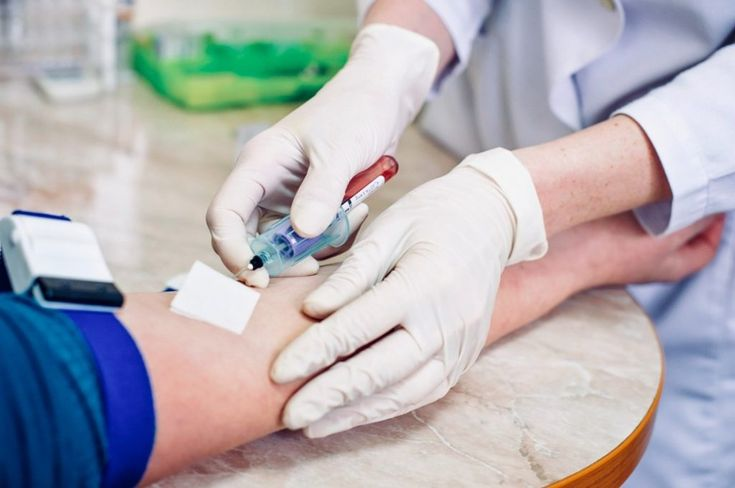
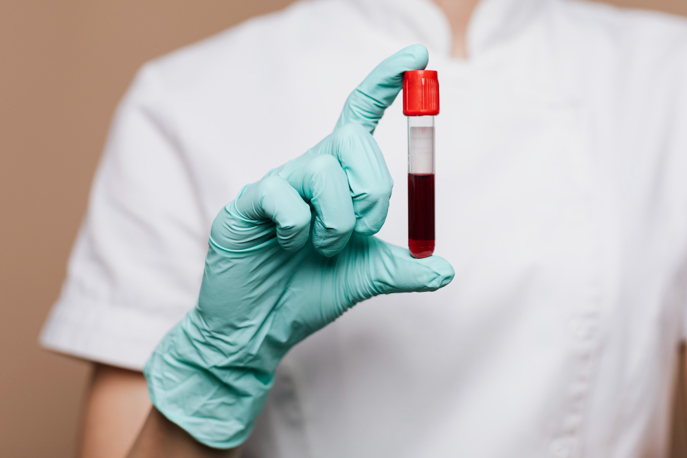
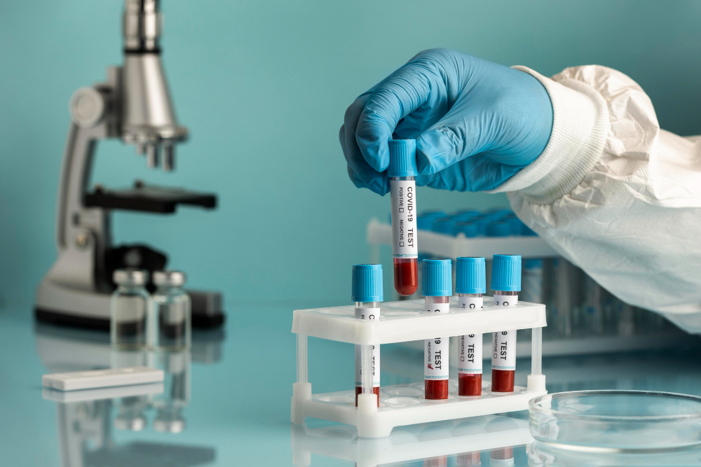

مركز التميز في التحاليل الطبية
مختبر مركز ميديكير يعد منشأة طبية متكاملة تقدم حلولاً تشخيصية دقيقة باستخدام أحدث ما توصلت إليه التكنولوجيا الطبية العالمية.
تقنيات متطورة
أجهزة تحليل آلية متكاملة من شركات رائدة مثل Roche و Siemens و Abbott
كفاءات طبية
فريق من الأخصائيين المعتمدين دولياً مع خبرات تصل إلى 15 عاماً في التشخيص المخبري
نظام الجودة
نلتزم بمعايير ISO 15189 و CAP مع ضوابط جودة صارمة لكل مرحلة تحليلية
شهادات الاعتماد:





+15
سنة خبرة